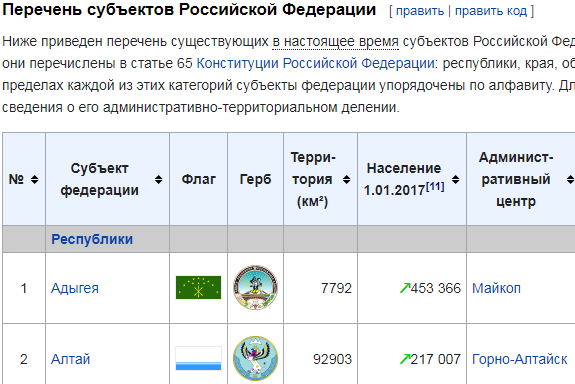
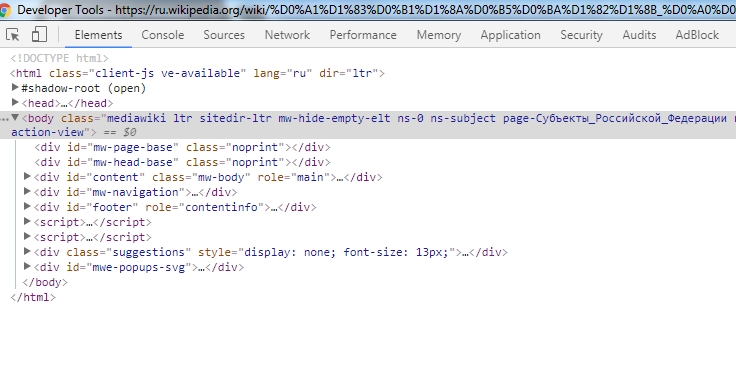
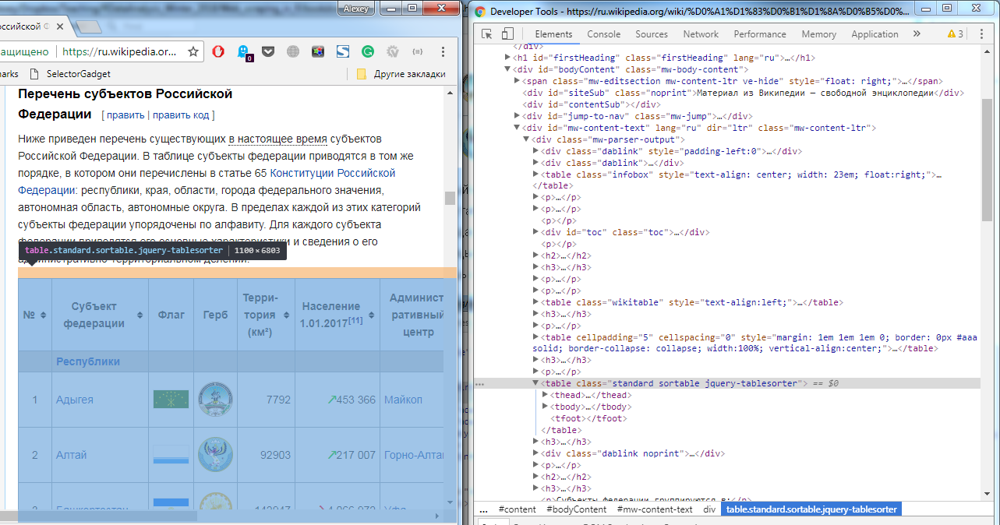
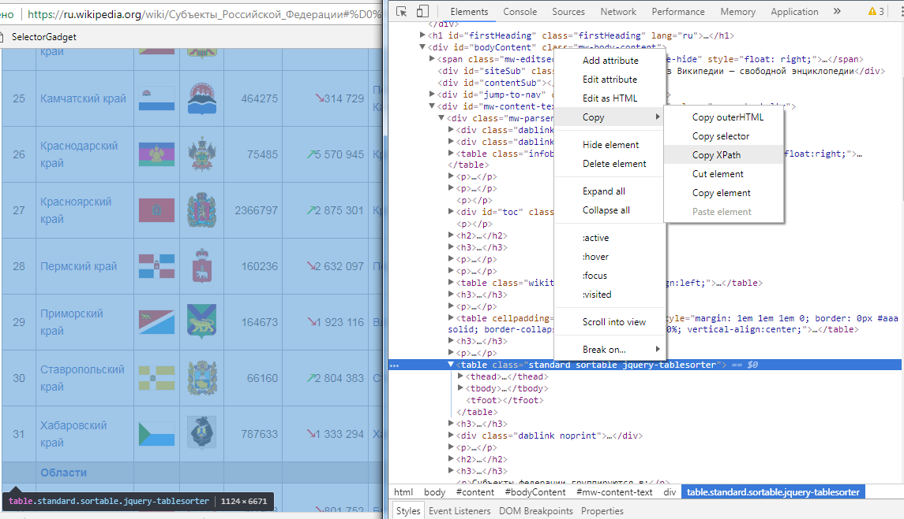
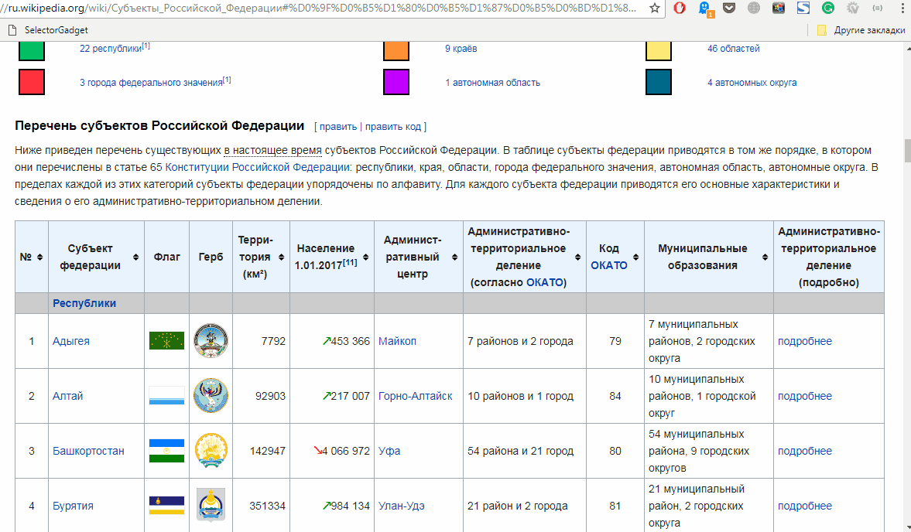

Часть 2 Easy way: rvest
2.1 Структура сайтов и HTML
Итак, допустим, вам нужно спарсить какие-то данные с какого-нибудь сайта. Чаще всего это значит, что вам нужна таблица на странице, какой-то ряд данных или определённые абзацы текста. В целом, большинство задач по скрэпингу данных заключаются в том, чтобы из одной или нескольких веб-страниц получилась чистая (когда каждый столбец соответствует переменной, а строка – отдельному наблюдению) таблица или датафрейм. Давайте начнём с простого и попробуем подумать, как скопировать таблицу, содержащую список субъектов Российской Федерации с населением, с соответствующей страницы Википедии.1

Давайте посмотрим на исходный код, чтобы понять, где находится эта таблица в представлении программы, которая потом эту таблицу скачает и сохранит. В любом современном браузере есть режим просмотра исходного кода (правой кнопкой мыши по странице в Chrome – “Просмотреть код”, в Firefox – “Исходный код страницы”, но можно просто нажать F12). Если перейти к этому режиму, то нам откроется начинка веб-страницы.

Перед нами – структура исходного кода HTML-страницы. HTML – это язык разметки, с помощью которого браузер понимает, как размещать картинки, текст, таблицы и другое содержание на веб-странице. Иными словами, HTML задачёт структуру страницы. В этой структуре есть много уровней вложенности, и на одном из уровней лежит нужная нам таблица. В режиме просмотра исходного кода можно видеть, за какой компонент отрисованной браузером и пригодной для обычного человека страницы отвечает тот или иной кусок блока. Для этого можно расположить рядом окно самой страницы с табличкой и окно просмотрщика исходного кода:

Раскрывая стрелочками наш блок с таблицей всё дальше и дальше, мы придём к отдельным строкам для каждого субъекта. Мы нашли наши данные, что делать дальше?
2.2 XPath и CSS селекторы: пробиваем путь к данным
Нужно дать программе (о самой программе чуть позже) понять, какой именно блок страницы нам нужен. Есть два способа это сделать.
Первый способ – использовать XPath. Это такой язык для запросов к XML-документам, который применим и для HTML-страниц. Он позволяет описать, какой именно элемент нам нужен. В случае с таблицей из Википедии XPath выглядит так:
//*[@id="mw-content-text"]/div/table[4]
Его можно получить из просмотрщика исходного кода в браузере:

Второй способ – использовать селекторы CSS. Если говорить просто, селекторы – это такие ярлыки внутри HTML-страницы, которые навешаны на разные блоки информации внутри страницы, чтобы определенным образом менять форматирование текста, картинок или чего-либо еще. Они бывают разных типов, несколько селекторов могут применяться к одному и тому же блоку внутри страницы одновременно, но самое главное, что с их помощью мы тоже можем указывать, что именно нам нужно. На предыдущей картинке прямо над кнопкой копирования XPath есть такая же кнопка “Copy selector”. Посмотрим, что он скопирует:
#mw-content-text > div > table.standard.sortable.jquery-tablesorter
Есть еще более простой способ получать XPath – с помощью небольшого инструмента SelectorGadget. Это маленький JS-скрипт, который автоматически (хотя иногда неуклюже) выделяет путь до нужного элемента. Сначала этот скрипт нужно перетянуть на панель задач (смотрите предыдущую ссылку) - это достаточно сделать один раз. Переходим на нужный сайт (в нашем случае – страничку на Википедии), нажимаем на SelectorGadget, он подгружается, и после этого нажимаем на ту область, откуда нам нужно сохранить данные. Нажатая область подсветится зелёным. А жёлтым подстветится то, что selectorgadget считает тем, что нам нужно. Если в желтую область попадает что-то, что нам не нужно, на это нажимаем еще раз и оно становится красным (и, значит, не попадёт к нам). В конце важно проверить, чтобы на всей странице желтым окрашены были только те данные, которые нам нужны.

Получили Xpath с помощью SelectorGadget’a, правда, неуклюжий, и, если его проверить, то неработающий. Селекторгаджет хорошо работает, когда нужно выделить хитрую комбинацию значений из страницы, но не всегда. Я говорил, что скрэпинг - грязное дело.
//*[contains(concat( " ", @class, " " ), concat( " ", "unsortable", " " ))] | //*[contains(concat( " ", @class, " " ), concat( " ", "jquery-tablesorter", " " ))]//td//*[contains(concat( " ", @class, " " ), concat( " ", "headerSort", " " ))]
Теперь можно расчехлять R и, наконец начать писать код для скрэпинга.
2.3 Rvest
Раньше для парсинга веб-страниц использовалась связка из библиотеки xml2 и httr: первая позволяет работать с XML-деревом, а вторя – обмениваться запросами с сайтами и получать HTML-код. Великий Хэдли Уикхэм написал оболочку над этими библиотеками, которая называется rvest и позволяет здорово экономить код и пространства имён.
У этой библиотеки есть разные функции (в том числе для работы с формами, в том числе с формами Google), но главные из них – это html_read(), которая получает код веб-страницы, и html_nodes(), которая выбирает нужные нам блоки из HTML-структуры страницы. Кроме того, очень полезная функция html_table(), которая умеет преобразовывать HTML-таблицы в обычные для R датафреймы. Давайте попробуем заскрэпить нашу таблицу с населением субъектов РФ.
Устанавливаем rvest: install.packages("rvest")
library(rvest)## Загрузка требуемого пакета: xml2# URL страницы
# https://ru.wikipedia.org/wiki/Субъекты_Российской_Федерации
wiki_url <- "https://ru.wikipedia.org/wiki/%D0%A1%D1%83%D0%B1%D1%8A%D0%B5%D0%BA%D1%82%D1%8B_%D0%A0%D0%BE%D1%81%D1%81%D0%B8%D0%B9%D1%81%D0%BA%D0%BE%D0%B9_%D0%A4%D0%B5%D0%B4%D0%B5%D1%80%D0%B0%D1%86%D0%B8%D0%B8"
# XPath, который мы вручную взяли из исходного кода HTML-страницы
wiki_xpath <- '//*[@id="mw-content-text"]/div/table[4]'
wiki_table <- wiki_url %>% read_html() %>% html_node(xpath = wiki_xpath) %>% html_table()
head(wiki_table)## № Субъект федерации Флаг Герб Терри-\nтория (км<U+00B2>) Население\n1.01.2017[11] Админист-\nративный центр Административно-территориальное деление\n(согласно ОКАТО) Код ОКАТО Муниципальные образования Административно-территориальное деление (подробно)
## 1 0.000001 Республики NA NA NA
## 2 1.000000 Адыгея NA NA 7792 <U+2197>453 366 Майкоп 7 районов и 2 города 79 7 муниципальных районов, 2 городских округа подробнее
## 3 2.000000 Алтай NA NA 92903 <U+2197>217 007 Горно-Алтайск 10 районов и 1 город 84 10 муниципальных районов, 1 городской округ подробнее
## 4 3.000000 Башкортостан NA NA 142947 <U+2198>4 066 972 Уфа 54 района и 21 город 80 54 муниципальных района, 9 городских округов подробнее
## 5 4.000000 Бурятия NA NA 351334 <U+2197>984 134 Улан-Удэ 21 район и 2 города 81 21 муниципальный район, 2 городских округа подробнее
## 6 5.000000 Дагестан NA NA 50270 <U+2197>3 041 900 Махачкала 41 район и 10 городов 82 42 муниципальных района, 10 городских округов подробнееВот и всё, у нас есть датафрейм, который нужно немного почистить и он будет готовым набором данных.
Давайте разберём, что произошло в этой строке: wiki_table <- wiki_url %>% read_html() %>% html_node(xpath = wiki_xpath) %>% html_table() Здесь используется оператор пайплайна (трубопроводчик?) из библиотек magrittr/dplyr: %>%

%>% позволяет сильно упрощать код. Код для получения таблицы из Википедии, написанный традиционным способом, но в одну строку, выглядел бы вот так:
wiki_table <- html_table(html_node(read_html(wiki_url), xpath = wiki_xpath))
Выглядит сложнее и непонятнее. Так что же происходит в той трубе для получения таблицы из Википедии?
wiki_table <- wiki_url %>% read_html() %>% html_node(xpath = wiki_xpath) %>% html_table()
Сначала мы берём wiki_url, адрес веб-страницы, этот адрем передаётся функции read_html(), которая обращается к серверу Википедии и получает исходный HTML-код. Затем этот код передаётся функции html_node() вместе с путём, по которому расположена наша таблица wiki_xpath, и на выходе получаем тот кусок HTML-кода, который и находится по этому адресу. Наконец, нам надо преобразовать этот кусок в привычный для R датафрейм с помощью html_table(), что мы успешно и делаем.
Правильный ответ – это обратиться к источнику данных, на который ведёт сноска в той же табличке: скачать сборник Росстата, найти там нужный Excel-файл и работать с ним. Однако допустим, что такой сноски нет.↩